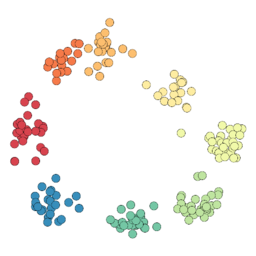

NeuralignFind shared activity patterns across neural recordings, with a factor for each neuron and each trial.
Quickstart
This example generates its own data:
from neuralign import NeuralignModel
from neuralign.simulation import simulate_sessions
sessions, _ = simulate_sessions(seed=42)
factors = NeuralignModel(sessions, rank=2, max_iter=500, seed=42).fit("cpu")
time_factors = factors.V # time × components
neuron_factors = factors[0].neuron_factors # neurons × components
trial_factors = factors[0].trial_factors # trials × components
For your own recordings, pass a list of arrays in neurons × time × trials order. Sessions may have different neuron and trial counts, but must share time bins.
Model and outputs · Use your recordings
See the factors
The fit separates shared time courses from neuron weights and trial-to-trial changes:

Plot the quickstart's factors with Matplotlib:
import matplotlib.pyplot as plt
fig, axes = plt.subplots(1, 3, figsize=(10, 3), layout="constrained")
axes[0].plot(time_factors.detach().numpy())
axes[0].set_title("Shared time courses")
axes[1].imshow(neuron_factors.detach().numpy(), aspect="auto", cmap="RdBu_r")
axes[1].set_title("Neuron weights")
axes[2].plot(trial_factors.detach().numpy())
axes[2].set_title("Trial weights")
plt.show()
Read left to right: when each component is active, which neurons contribute, and how its strength varies across trials. Full example with axis labels.
Install
Python 3.10+; GPU fitting is recommended for larger datasets (use fit("cuda")).
python -m pip install neuralign
For CPU-only installation, install CPU PyTorch first:
python -m pip install "torch>=2.9.1" --index-url https://download.pytorch.org/whl/cpu
python -m pip install neuralign
For plotting, add Matplotlib: python -m pip install matplotlib.
Paper
Neuralign is described in Identifying aligned tensor decompositions across heterogeneous neural datasets (bioRxiv, 2026).
Please cite the software and manuscript when using Neuralign in research. Citation · MIT License.